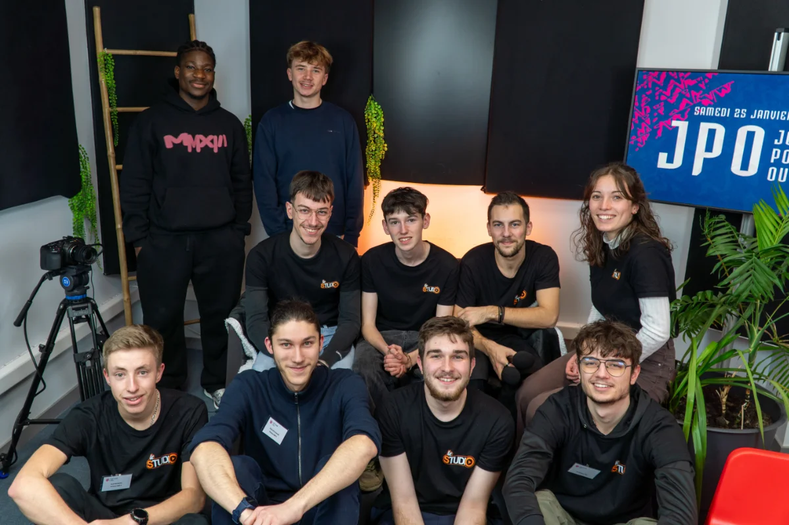

Portes Ouvertes Virtuelles
Ouvrir les portes du campus
à ceux qui ne peuvent pas venir.
Le projet
6 heures
de direct.
Depuis 2022, Le Studio retransmet les portes ouvertes de l'IUT de Laval en direct sur Twitch. L'idée est née pendant la Covid et a perduré afin de permettre à ceux qui ne peuvent pas se déplacer de découvrir le campus, les formations et les enseignants comme s'ils y étaient.
Le format est ambitieux : six heures de live continu avec des visites de bâtiments, des interviews d'enseignants et d'étudiants, des présentations de formations. Chaque minute est planifiée pour garder un direct fluide et engageant sur toute la durée.
Mon rôle
- Coordination des plannings
- Consitituton de l'équipe technique
- Animateur
Outils
- ATEM Mini / Blackmagic
- OBS Studio
- Twitch
Livrables
- Live de 6h sur Twitch
- Planning de diffusion
- Coordination animateurs & intervenants
Organisation
Planifier chaque
minute.
Un live de six heures ne s'improvise pas. Il faut coordonner les plannings de diffusion, synchroniser les animateurs, caler les créneaux des intervenants — enseignants et étudiants — et anticiper les tournages des visites de chaque bâtiments. Mon rôle était de m'assurer que le fil rouge reste cohérent du début à la fin.



Le live
Réagir
en temps réel.
Le jour J, c'est la régie qui prend le relais. Gestion des flux en direct et en différé, coordination avec les autres animateurs. Malgré la préparation, le live, moment intense, impose de s'adapter en permanence : un intervenant en retard, un problème technique, un changement de dernière minute. C'est ce qui rend le format aussi exigeant et formateur.


Résultats